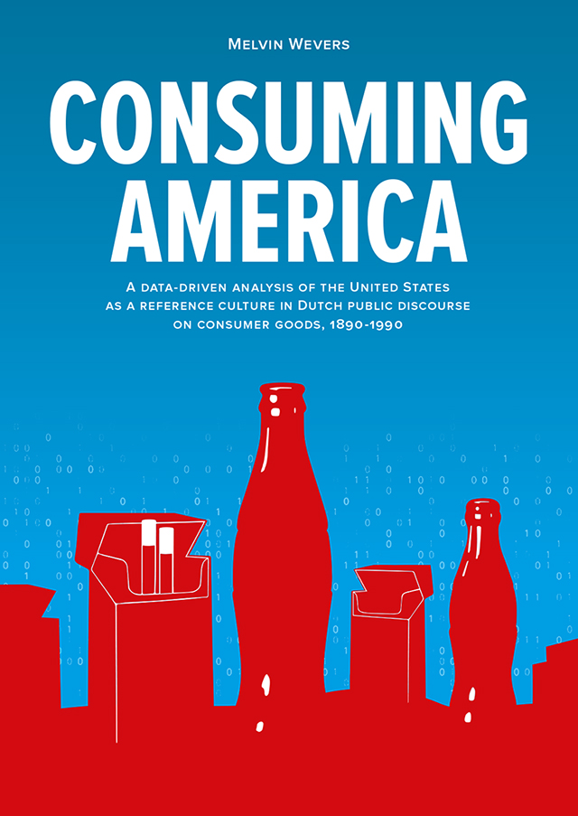

---
layout: default
title: Phd Defense
--- 
<div class="blurb">
  <H1> Phd Defense</H1>
	<H2>Time Table</H2>
	<h3>12.45 - 13.30 -- Public Defense (Academiegebouw, Domplein 29, Utrecht)</h3>
	<h3>13.30 - 14.45 -- Reception (Academiegebouw, Domplein 29, Utrecht)</h3>
	<h3>20.30 -- Party (Bar Basquiat, Javastraat 88-90, Amsterdam)</h3>
	
	<p>When people are asked to describe American culture, the first things that come to mind are mass-produced cigarettes, 
		enormous cups of automatically-dispensed Coca-Cola, and unhealthy, super-sized fast-food. These commodities 
		symbolize values, ideas, and practices that are regularly associated with the United States. 
		Public debates on the health risks of cigarettes, the ubiquity of Coca-Cola, and the branding of consumer goods 
		signified particular aspects of American consumer society. This thesis explores how certain perceptions of the 
		United States emerged and gained traction in the Netherlands.</p>
 	<p>Pairing computational text-mining techniques and more traditional historical methods, Melvin Wevers analyzes the representation 
		of the United States in more than fifty million articles and twenty million advertisements in twentieth-century digitized 
		Dutch newspapers. Consuming America offers a data-driven, longitudinal analysis of the historical dynamics of the United 
		States as a reference culture in public debates related to modernizing Dutch consumer society. Wevers concludes that despite 
		periods of flagrant anti-Americanism in the Netherlands, for Dutch people the United States functioned as a persistent beacon 
		of consumerism, modernization, and globalization throughout the twentieth century.</p>
	

</div><!-- /.blurb -->
